DevOps Tutorial: Automating Web Application using Jenkins, Docker and GitHub.
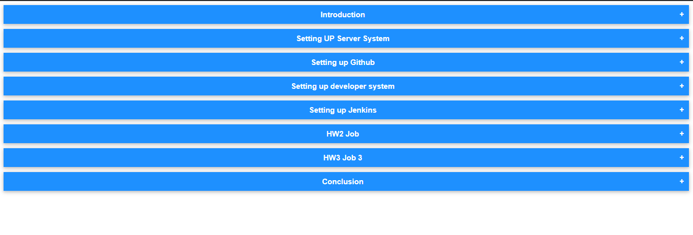
We have two environments Prdouction Server and Testing Server created using docker technology on RHEL8 .
If you are already a part of Devops Assembly lines training under Vimal Daga Sir then you will catch the flow. ;)
Go through the steps
create a new repository on github
login to github
create new repo
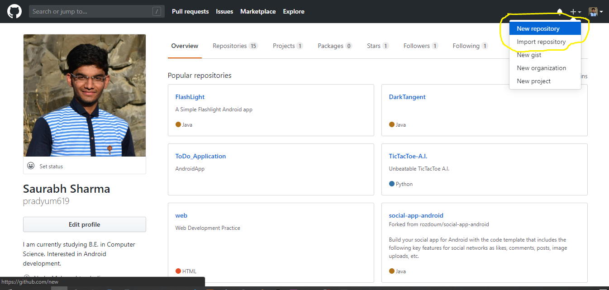
don't forget to check README Intitialize
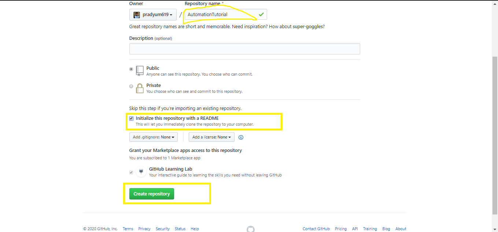
goto developer system and clone the repo locally
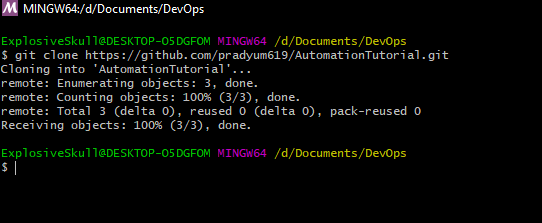
Edit the post commit file
Located in .git directory inside your cloned repo
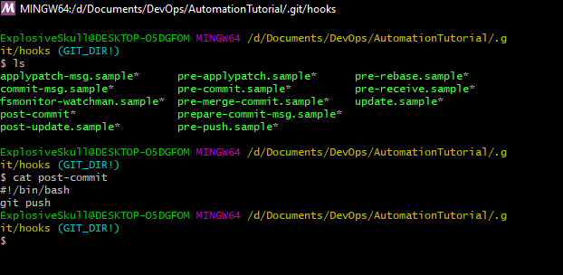
CODE:
#! /bin/bash/
git push
create some code files and commit to master branch
create a new branch
git branch dev1
If you want you can do some merge and rebase for practice
**********THIS is Where Magic happens*********
***Install the github plugin in jenkins***
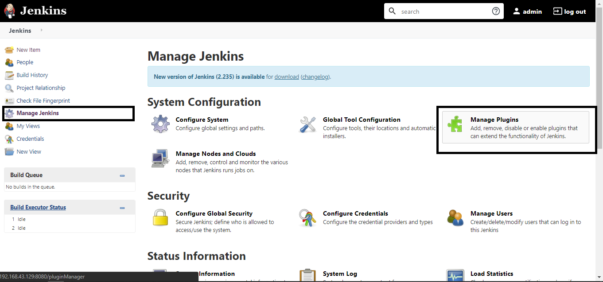
Check the restart jenkins option while installing
***There are three Jobs to create:***
HW1:
Configure as Follows:
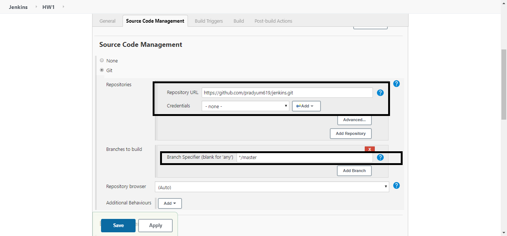
Insert the repo link inside the scm option
choose branch master
Build triggers : use polling in every minute (although we can use hooks which is better option but for now am going with polling)
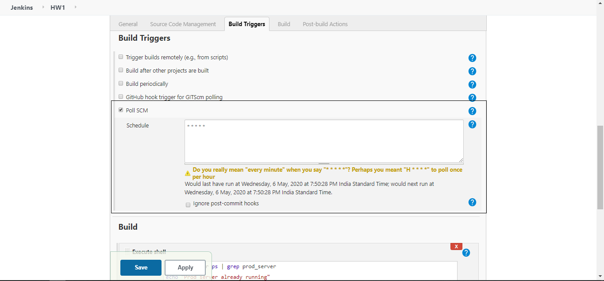
Execute shell: Paste the following code
if sudo docker ps | grep prod_server
then
echo "Prod server already running"
else
sudo docker run -d -t -i -p 8081:80 -v /prodDir:/usr/local/apache2/htdocs/ --name prod_server httpd
fi
sudo cp -r -v -f * /prodDir/
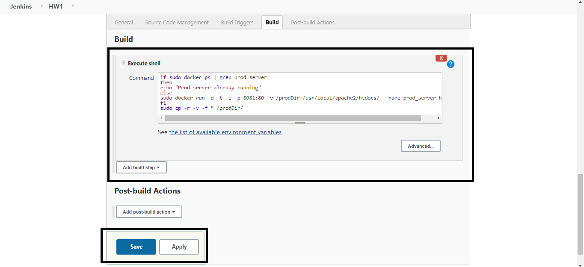
Click apply and then save
HW2:
Configure as Follows:
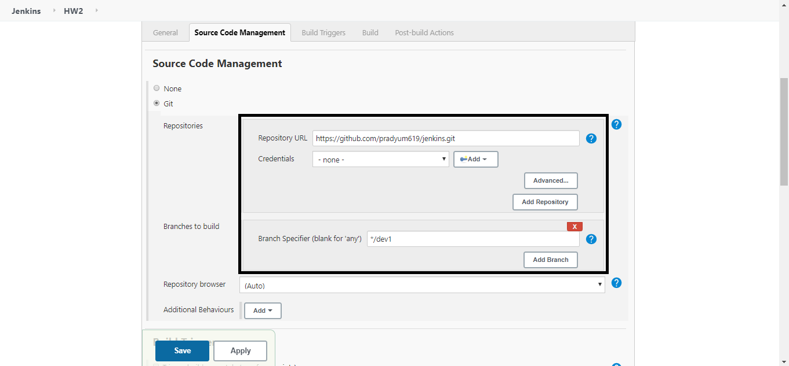
Insert the repo link inside the scm option
choose branch dev1
Build triggers : use polling in every minute (although we can use hooks which is better option but for now am going with polling)
Execute shell: Paste the following code
if sudo docker ps | grep test_server
then
echo "Test server already running"
else
sudo docker run -d -t -i -p 8082:80 -v /testDir:/usr/local/apache2/htdocs/ --name test_server httpd
fi
sudo cp -r -v -f * /testDir/
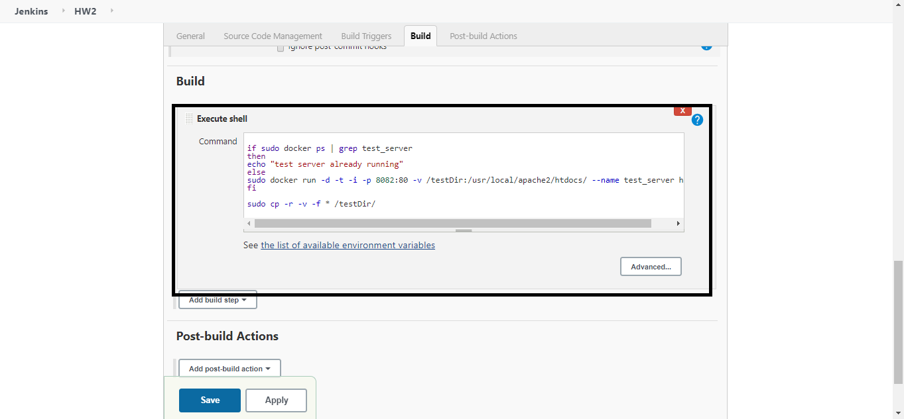
Click apply and then save
HW3:
Configure as Follows:
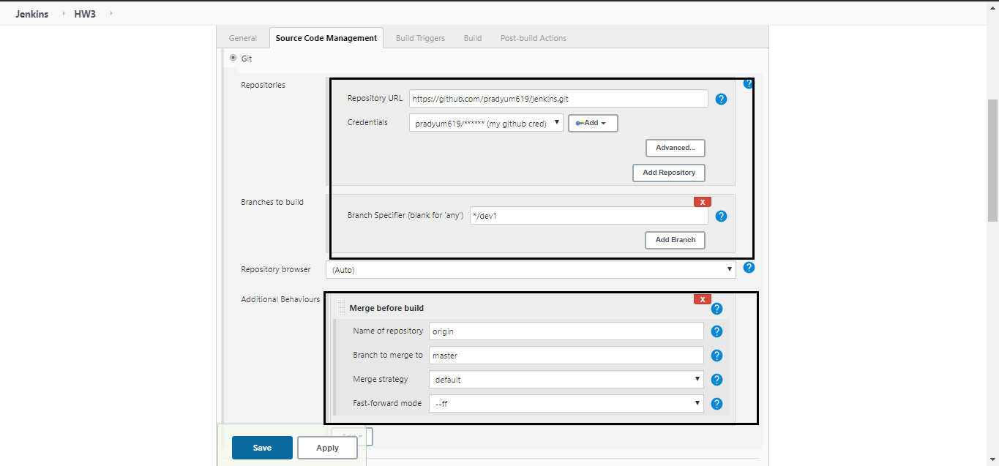
Insert the repo link inside the scm option
choose branch dev1
Build triggers : No need to add this trigger , as testing team will run this job but assuming that all tests are good so we trigger this job just after HW2
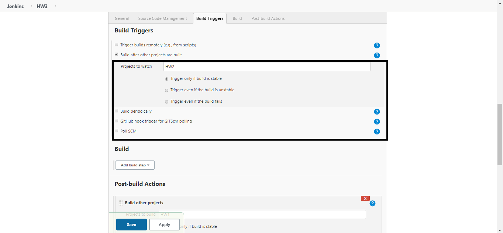
***ADD this in POST BUILD***
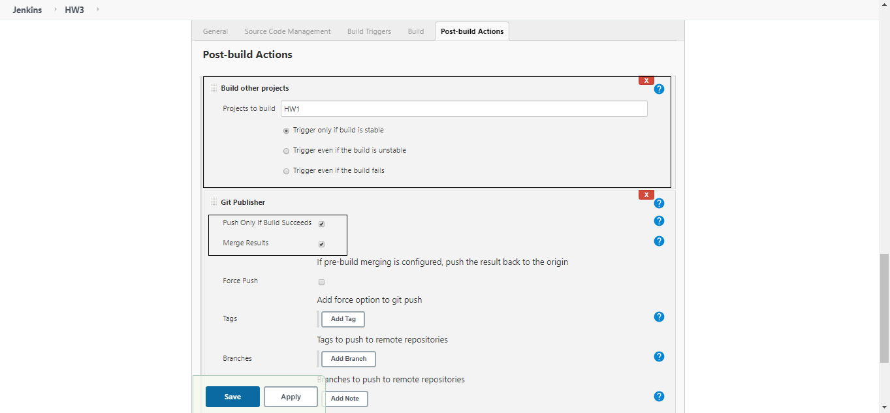
Click apply and then save